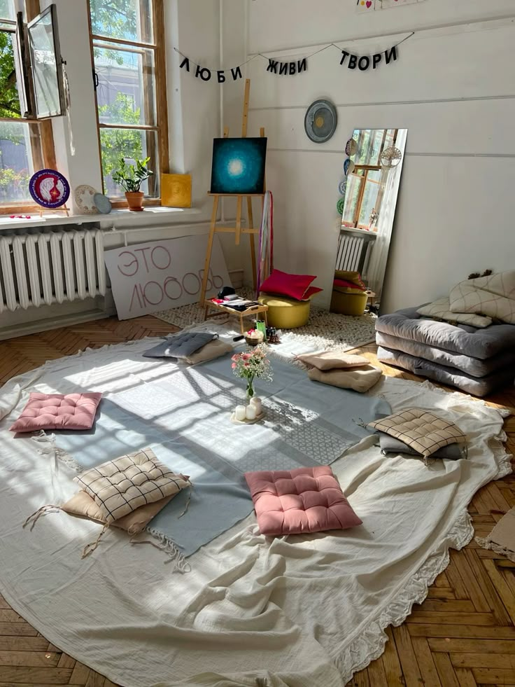
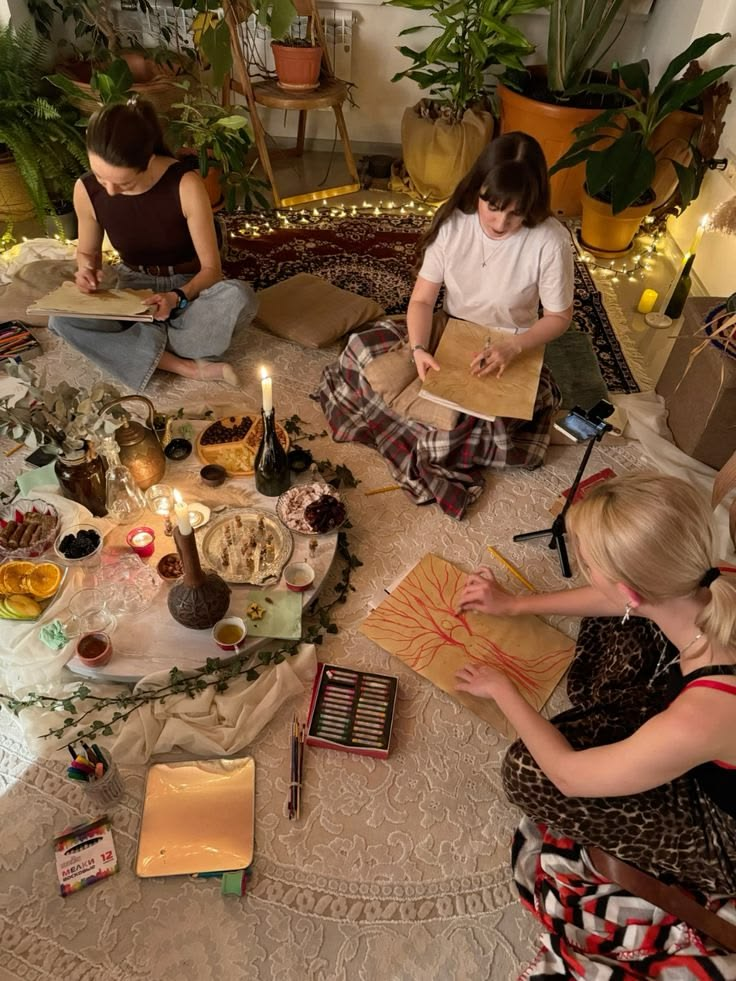
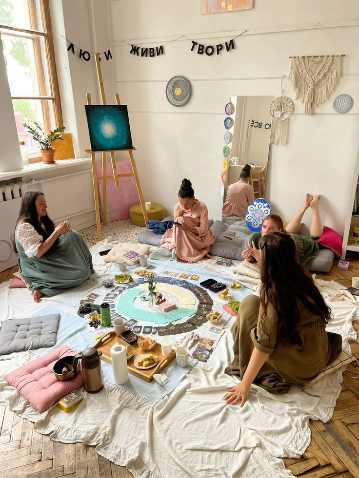
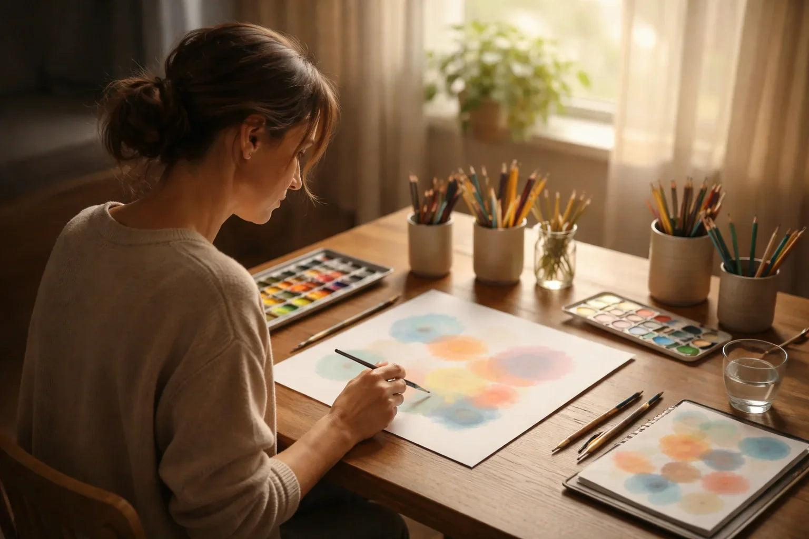
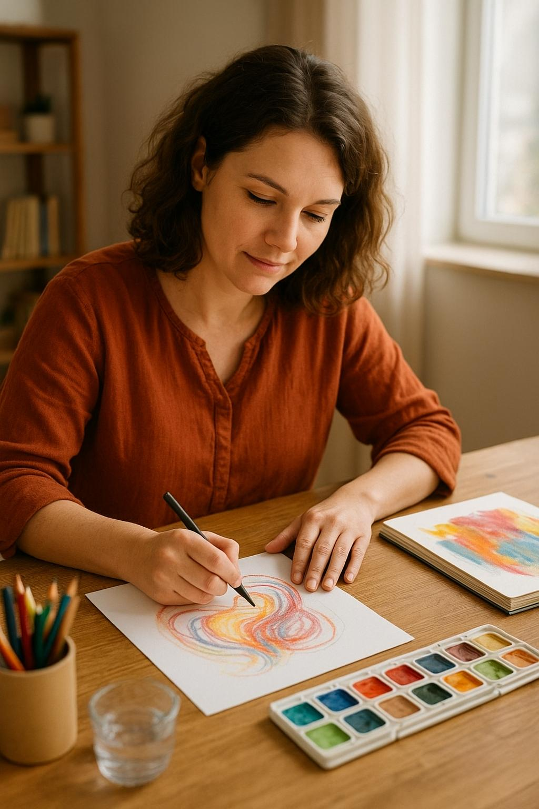
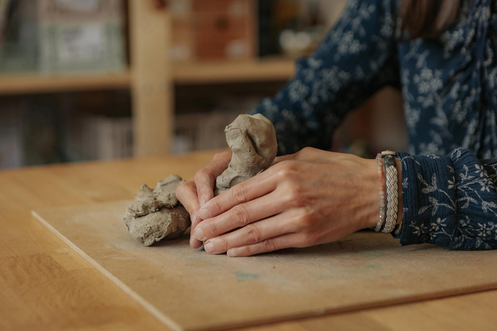
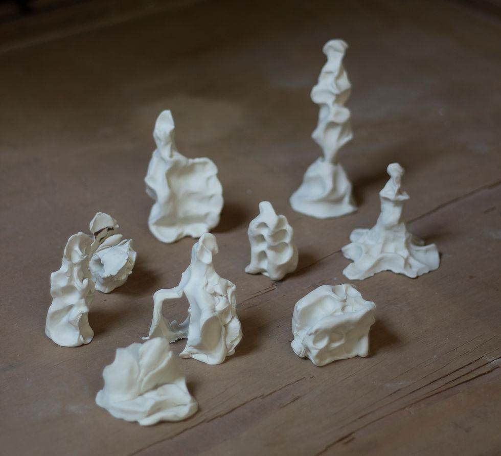
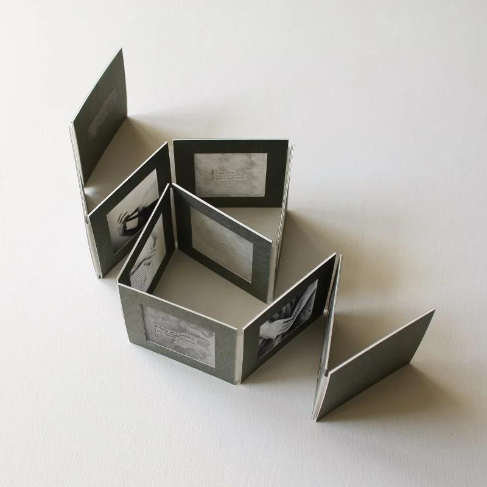

Искусство быть собой
Женская группа, в которой не нужно никем становиться.
Пространство для исследования чувств, желаний, отношений с собой и личных границ через художественные практики.
Восемь встреч, на которых можно постепенно замечать собственный голос — среди привычных ролей, забот, отношений и ожиданий. Здесь не нужно становиться лучше, увереннее или сильнее. Можно начать с вопроса: «Какая я сейчас?»
Узнать об участииВедущая: Анна Анопова — посмотреть профиль специалиста
Полная программа на авторском сайте
Когда хочется снова услышать себя
Иногда мы так долго заботимся о других, принимаем решения, справляемся с повседневными задачами, что собственные желания становятся почти неслышными. Мы привыкаем быть нужными, понимающими, удобными — и не всегда замечаем, где во всём этом остаёмся мы сами.
«Искусство быть собой» — приглашение исследовать то, что происходит внутри. Не обязательно приходить с чётким запросом. Достаточно любопытства к себе и желания попробовать другой способ разговора со своими чувствами — через цвет, движение, форму, материалы и образы.
Здесь можно не искать немедленных ответов. Можно сомневаться, менять мнение, выбирать дистанцию и темп, замечать то, что радует, и то, что требует внимания.
Атмосфера встреч
Творчество, общение и возможность быть собой. Не требуется художественная подготовка. Мы не оцениваем работы и не ищем в них «правильный» смысл: автор своего рисунка, коллажа или скульптуры — сам участник.



Восемь встреч — восемь открытий
Каждая встреча — самостоятельное художественное исследование. Можно рисовать, лепить, двигаться, работать с бумагой и тканью. Не нужно уметь рисовать или заранее знать, каким должен быть результат.
01Какая я сегодня?

Знакомство с собой через цвет, линию и свободное рисование. С каким состоянием я пришла? Что мне важно сейчас?
Мы начинаем не с рассказа о том, кем должны быть, а с внимательного взгляда на настоящее. Цвет и линия помогают заметить настроение, внутренний ритм и то, для чего пока не находятся слова.
Художественная практика: Интуитивная живопись «Мой внутренний пейзаж».
02Моё тело — моя территория
Фотография для этой встречи будет добавлена из утверждённой подборки.
Исследуем телесные ощущения, движение, комфорт и право занимать пространство. Не оцениваем внешность и не ищем «правильных» ощущений.
Через движение, жест и работу с пространством исследуем, где нам комфортно, что помогает чувствовать опору и как мы узнаём собственное «достаточно». Участие в движении всегда можно заменить работой на бумаге.
Художественная практика: Большой лист, условный силуэт, свободное движение и следы жестов.
03Моим чувствам есть место

Какие чувства легко выражать, а каким редко находится место? Пробуем разные художественные языки.
Разным чувствам нужны разные формы выражения. Иногда это яркий цвет, иногда едва заметный след. Мы пробуем дать место переживаниям, не оценивая их как хорошие или плохие.
Художественная практика: Экспрессивная живопись, фактуры и отпечатки.
04Где заканчиваюсь я и начинаются другие?
Фотография для этой встречи будет добавлена из утверждённой подборки.
Исследуем личные границы, близость и дистанцию: что хочется впустить, а чему сказать «нет»?
Что для меня означает близость? Когда хочется приблизиться, а когда — отступить? В работе с подвижными границами можно попробовать разные расстояния и заметить, какие из них подходят именно сейчас.
Художественная практика: Пространственная композиция с нитями, бумагой и подвижными границами.
05Я и мои отношения
Фотография для этой встречи будет добавлена из утверждённой подборки.
Замечаем, как меняется восприятие отношений, когда можно двигать объекты, менять расстояние и форму.
В отношениях мы бываем разными. Через расположение предметов и материалов исследуем привычные роли, взаимность, ожидания и возможность оставаться собой рядом с другим человеком.
Художественная практика: Пространственная композиция «Между нами» с бумагой, нитями и подвижными объектами.
06Образы, в которых я узнаю себя


Ищем личные символы, качества и воспоминания, которые хочется сохранить. Карты помогают вести диалог с собственными ассоциациями.
Не всё важное о себе можно выразить словами. Мы создаём небольшие образы и символы, которые могут напоминать о личных качествах, воспоминаниях и открытиях. Их значение определяет только автор.
Художественная практика: Глина и создание личных образов; серия метафорических карт из коллажа, акварели и отпечатков.
07Моя сила и моя нежность
Фотография для этой встречи будет добавлена из утверждённой подборки.
Что меня поддерживает? Как можно заботиться о себе, не требуя постоянной силы?
Забота о себе не всегда выглядит как действие или достижение. Иногда это пауза, поддержка, мягкость. Через ткань и коллаж ищем собственные образы опоры и бережного отношения к себе.
Художественная практика: Текстильная композиция и коллаж «То, что меня поддерживает».
08Искусство быть собой

Собираем открытия восьми встреч, замечаем изменения и выбираем, что хочется взять с собой дальше.
В завершение мы возвращаемся к созданным работам и собираем личную историю этих встреч. Не как отчёт о переменах, а как возможность увидеть, что стало заметнее и что хочется сохранить.
Художественная практика: Авторская книга «Моя история продолжается».
Участие в телесных и групповых практиках добровольное. Можно выбирать удобный способ работы и не делиться личным, если не хочется.
Как устроена группа
Программа состоит из восьми тематических встреч. Каждая встреча включает бережное знакомство с темой, творческое исследование и возможность осмыслить полученный опыт. Можно работать молча, задавать вопросы и делиться только тем, чем хочется.
Художественная подготовка не требуется. Материалы и способ участия подбираются с учётом формата встречи. Мы уважаем личные границы и договорённости о конфиденциальности: истории других участниц остаются внутри группы.
Ближайший набор
Даты, место, продолжительность встреч и стоимость будут объявлены после формирования группы. Сейчас можно задать вопрос или сообщить об интересе к участию.
Узнать о наборе и задать вопросОбращение не обязывает записываться. Перед участием можно уточнить формат и задать вопросы ведущей.